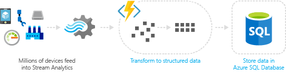
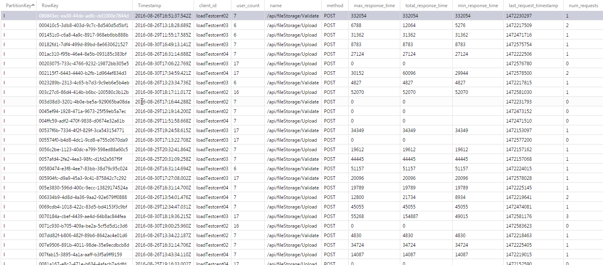
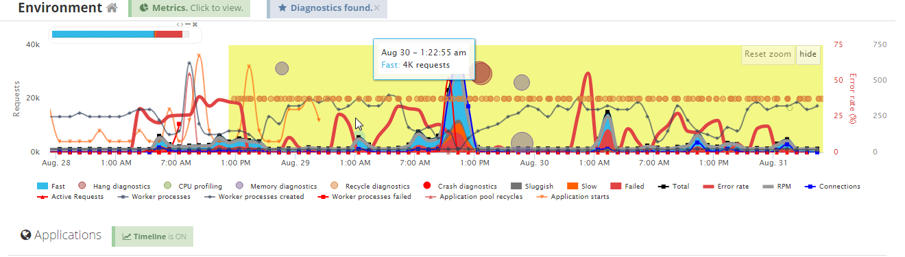

Load Testing in the Azure Cloud
Alan Barr
What is load testing?
Why Load test?
Load Testing gives us reporting to know what changes are making the most impact
Load Testing myVu
Where do I start?
What tools are out there I can use off the shelf?
What constraints do I need to consider when choosing a tool?
Many Tools Available
Open Source and Proprietary, GUI/Code
- JMeter
- Gatling
- Locust.IO
- Grinder
- Visual Studio
- HP Load Runner
Use the right tool for the job
myVu Challenges
All test environments use HTTPS
Tool would need to handle multipart form uploads
Ability to route requests from different locations not from local network
Allow for different upload scenarios
The Tools
CasperJS/PhantomJS
JavaScript Headless Browser
Login as a user and save authorization tokens for future requests
Setup configuration for writing the file, command line options, and specific user config
var fs = require('fs');
var casper = require('casper').create({waitTimeout:10000});
var user = casper.cli.get('user');
var config = require('./config.json');
var urlApp = config["host"];
var textFileName = user == 'user1' ? "useroauth.txt" : "useroauth1.txt";
var tokenFileName = user == 'user1' ? "usertoken.txt" : "usertoken1.txt";
Go to the page and fill the form out and submit
casper.start(urlApp, function() {
this.waitForSelector('form', function() {
this.fillSelectors('form', {
'#LoginId': config[user]['username'],
'#Password': config[user]['password']
}, true);
});
});
Wait long enough for cookies to load grab the refresh code
casper.then(function() {
this.wait(5000,function(){
this.echo("saved oauth token");
var cookies = phantom.cookies;
cookies.forEach(function(e){
if(e.name == 'refreshCode') {
var savedCode = e.value.replace(/\%22/g, '');
fs.write(tokenFileName, savedCode, 644);
this.echo("saved refresh token");
}
});
});
});
Wait for the authorization header code
casper.on('resource.requested', function(resource) {
var authHeader = resource.headers.forEach(function(e){
if(e.name == "Authorization"){
var savedAuth = JSON.stringify(e.value).replace(/\"/g, '');
fs.write(textFileName, savedAuth, 644);
}
});
});
casper.run();
Locust.IO
Python 2.7, Requests and Requests Tool-belt modules
Load config data
from locust import HttpLocust, Locust, TaskSet, task, events
from requests_toolbelt import MultipartEncoder
import requests
import json
from random import randint
import sys
import datetime
requests.packages.urllib3.disable_warnings()
token0 = open("useroauth.txt", 'r').read()
token1 = open("useroauth1.txt", 'r').read()
refreshToken0 = open("usertoken.txt", 'r').read()
refreshToken1 = open("usertoken1.txt", 'r').read()
config = json.load(open("config.json"))
token = [token0,token1]
atlasID = {token0: config["user1"]["loanAccount"],
token1: config["user2"]["loanAccount"]}
host = config["host"]
Create a task to run
class MyTaskSet1(TaskSet):
@task
def file_upload(self):
global token
attach = open('assets/Intro_to_Agile.pdf', 'rb')
randomNumber = randint(0, 1)
thisToken = token[randomNumber]
headers = {
'Authorization': thisToken,
}
m = MultipartEncoder(
fields={
'atlasLeadId':atlasID[thisToken],'blitzDocFolderId':'-1','documentType':'upload',
'file0': ('Intro_To_Agile.pdf', attach, 'application/pdf', {'Expires': '0'})}
)
r = self.client.post("/api/fileStorage/Upload",
data=m,headers=headers, verify=False, catch_response=False)
print("Locust instance ({}) executing my_task".format(self.locust))
Let Locust know what tasks to run
class MyLocust(HttpLocust):
min_wait = 5000
max_wait = 15000
host = config["host"]
task_set = MyTaskSet1
Azure Cloud
Create a distributed environment to simulate distant users
- Set up a network gateway
- Set up Linux Virtual Machines
- Configure ports so machines can communicate
- Open a port so these machines can access your network
- Optionally: Setup an Azure Function Endpoint to send results to an Azure Storage Table
Storing Result Data
Configure endpoint to accept data and save it to the NoSQL storage table

module.exports = function (context, data) {
context.log("received report");
if(data) {
context.res = {status: 200};
context.bindings.locustoutputTable =
{
"partitionKey":"l",
"rowKey": context.bindingData.InvocationId,
"client_id" : data.client_id,
"user_count" : data.user_count,
"name" : data.name,
"method" : data.method,
"max_response_time" : data.max_response_time,
"total_response_time" : data.total_response_time,
"min_response_time" : data.min_response_time,
"last_request_timestamp" : data.last_request_timestamp,
"num_requests" : data.num_requests,
"total_content_length" : data.total_content_length,
"num_failures" : data.num_failures,
"start_time" : data.start_time,
"test_name" : data.test_name,
"num_reqs_per_sec": data.num_reqs_per_sec,
"response_times": data.response_times
};
}
else {
context.res = {
status: 400,
body: { error: 'Must be submitted as Locust Report Data'}
};
}
context.done();
}

Testing Iteration
Monitoring Results
Testing Our Hypothesis
Can we improve upload times by changing how we log our data?
Test run with current logging on
| # Requests | # Failed | Median | Average | Min Resp | Max Resp | # Reqs/second |
| 4107 | 2135 | 31 | 32.4 | 0 | 108 | 0.63 |
Request times in seconds
Test run with experimental logging utility
| # Requests | # Failed | Median | Average | Min Resp | Max Resp | # Reqs/second |
| 495 | 588 | 11 | 11.38 | 0 | 22.8 | 0.5 |
Request times in seconds
Results
65% decrease in the median and average upload times
Small change with an impressive impact